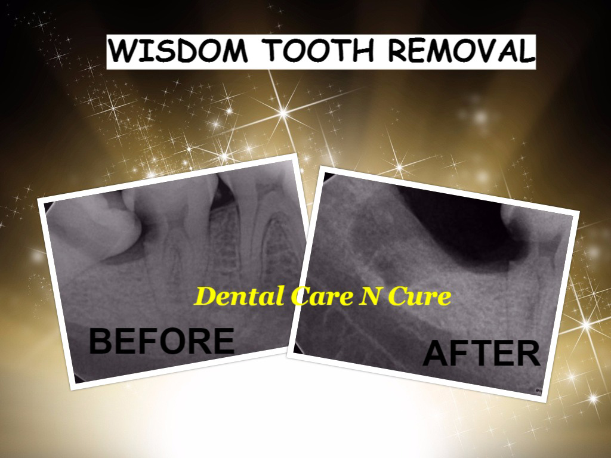

Oral Surgery
Oral and maxillofacial surgery is a branch of dentistry that deals with the art of diagnosis and treatment of various diseases, pathologies and defects involving the orofacial region
Oral and maxillofacial surgery essentially deals with the treatment of the following conditions:
- Simple and complicated cysts and tumours of both odontogenic and nonodontogenic origin, involving the jaw bones.
- Fractures of the facial bones.
- Temporomandibular joint disorders including internal derangement and ankylosis.
- Salivary gland diseases.
- Dentofacial deformities, either acquired or congenital.
- Orofacial infections involving the soft and hard tissues.
- Precancerous conditions and lesions like, oral submucous fibrosis and leukoplakia.
- Detection and management of oral cancer.

"Wisdom teeth" are a type of molar. Molars are the large chewing teeth found furthest in the back of the mouth.
Most people have 1st, 2nd and 3rd molars. A person's third molars are their wisdom teeth. For most people, the eruption process takes place during their late teens or early twenties (usually ages 18 to 24 years), although eruption outside of this age range is not uncommon.
If there is not enough room for the teeth, or they are not aligned properly, they may never fully erupt.
This failure to erupt properly might occur because:
- There is not enough room in the person's jaw to accommodate the tooth.
- The tooth's eruption path is obstructed by other teeth.
- Because the angulation of the tooth is improper.
Wisdom teeth under ideal circumstances should grow in straight like any other tooth. However it is common for wisdom teeth to become
impacted inside the jaw or just under the gums. If this occurs, your wisdom teeth should be removed. Common Impactions:
- Horizontal Impaction
- Angular Impaction
- Vertical Impaction
- Soft Tissue Impaction